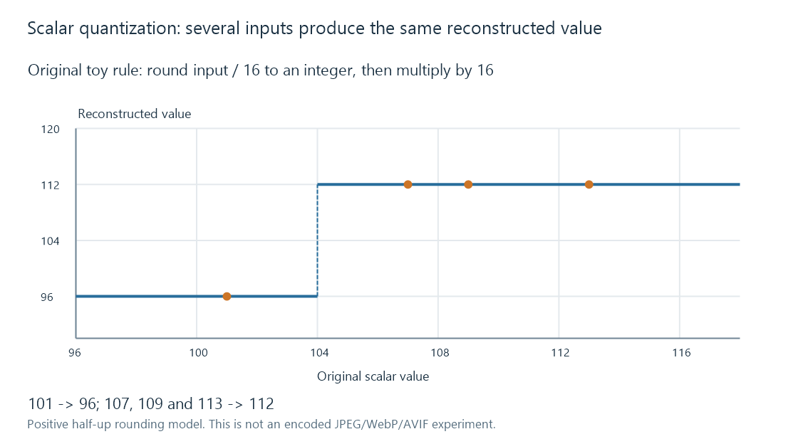

Image compression
Image compression reduces encoded storage through reversible coding or lossy representation changes, while decoded dimensions and downstream processing remain separate.
Compression changes the encoded representation of an image to use fewer storage bytes. Lossless coding allows exact reconstruction of its input samples. Lossy coding replaces some information with a representation judged useful at a smaller size.
Exact reconstruction has a specific starting point
Suppose an editor resizes a photograph from 6000 × 4000 to 1200 × 800, then saves the smaller samples losslessly. Decoding can exactly recover the 1200 × 800 result. It cannot recover the discarded original grid.
Palette conversion and colour/precision reduction can introduce similar earlier changes. A lossless final codec does not undo them.
| Boundary | What can change |
|---|---|
| Preprocessing | Dimensions, crop, colour representation or precision |
| Lossy coding | Information represented by the encoded samples/coefficients |
| Lossless coding | Byte arrangement while retaining its specified input |
| Decode and display | Reconstructed samples, then presentation processing |
Quantization groups different values together
Take an invented scalar quantizer that rounds each value to a multiple of 16:
| Input | Stored index: round(input / 16) | Reconstructed value |
|---|---|---|
| 101 | 6 | 96 |
| 107 | 7 | 112 |
| 109 | 7 | 112 |
| 113 | 7 | 112 |
Three different inputs lead to 112. The decoder cannot determine which was originally supplied.

This model explains irreversible grouping; it is not a complete JPEG, WebP or AVIF encoder. Real codecs can apply quantization to transformed coefficients and use other prediction/coding steps.
Image content affects size
A flat-colour diagram contains different redundancy from textured foliage or sensor noise. Consequently, an equal dimension and codec setting do not imply an equal file size.
A comparison should keep the source, output dimensions, colour/alpha requirements and encoder context explicit. A “quality 80” label is an implementation setting, not a universal perceptual scale shared by codecs and applications.
Decoded memory remains related to the output sample grid and buffer representation. A small 24-megapixel file can still require a large pixel buffer when an Emby image-processing route opens it.
Repeatedly editing and re-encoding lossy derivatives can introduce additional loss. Retaining a suitable master and generating the needed browsing derivative from it avoids making a previous small preview the input for every later version.